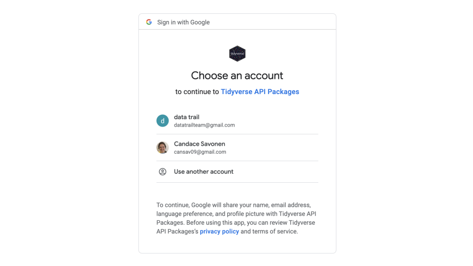
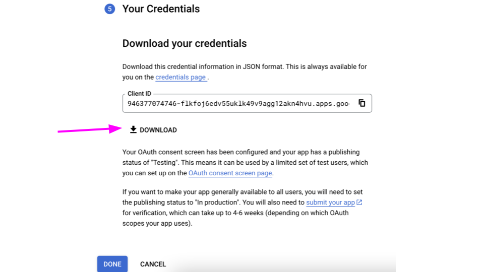
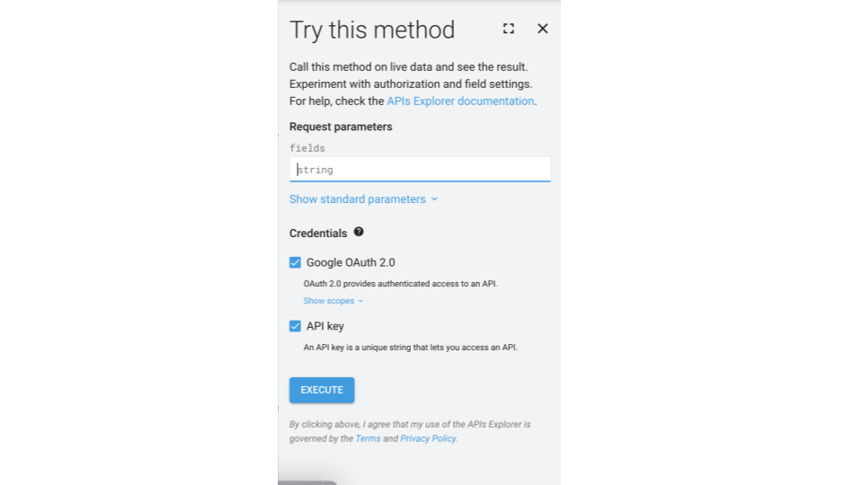

For quite some time, I’ve always wanted to unlock the powers of using Google API in an R package but the authorization bit had always puzzled me!
This is not to say that others have not done a lot of great work in this topic of R packages and Google API! There are a lot of great R packages with documentation out there to help you do this. Three in particular:
But it seems like the people who understand it: understand it. And the rest of us are left confused!
I still didn’t understand how to know what kinds of credentials I needed and I always found myself lost in a lacking the correct permissions loop!
But! I figured it out! And I figured this is a good time to write about it.
Background
Google has a load of different apps that are free, online and useful in a daily project workflow.
First off, what’s an API? It stands for Application Programming Interface. Why am I so excited about having figured this out? APIs are powerful because they allow different computer programs to talk to each other and share information. This means that I (and hopefully you after this blogpost) can use existing tools and features to build new applications faster and more easily. It’s like being able to borrow a tool from a friend instead of having to build it from scratch yourself.
Let me explain my particular use case:
I was working on putting a bunch of files on to Google and set them up on Google Classroom. To do this, was very tedious. I had a lot of steps I had to perform for each…and every… individual file.
There’s gotta be a better way than all this tedious work!
If only there was a way I could write a script that could do this all for me at the call of one script! Spoiler alert: There is and I figured it out!
But before I could write such a script, I had to be able to get access to the data that is on an Google API, and to do that I needed to figure out authorization.
Authorization is just a way to tell an App like Google - hey! It’s me, its okay, you can share this data! People do authorization steps all the time when they use their usernames and passwords to login to things. But usernames and passwords are a simpler form of authorization. And when it comes to APIs, these are often not secure enough to keep all this data safe.
A dummy’s rundown on the auth types
It’s me! I’m the dummy! The first place that people would always lose me is the authorization types.
Basic Authentication: Basic authentication is a simple authentication method that sends a username and password in plain text with each request to the API. While easy to implement, it is also very insecure because the credentials are sent in plain text and can be intercepted by anyone with access to the network traffic.OAuth 2.0: OAuth stands forOpen Authorization. It’s an authorization protocol that is widely used by a lot of different websites. The name reflects the fact that the OAuth protocol is designed to provide an open and standardized way for different systems to authorize and authenticate access to protected resources. The 2.0 part just refers to the fact that there was a OAuth 1.0 that is not quite as secure.API KeysandPersonal Access Tokens- these are less secure ways of authorization but more convenient. They are often special strings of characters, symbols and numbers that you can supply to authorize the API to release your data.
The goal
If you create an app that uses one of these APIs usually you’ll see a kind of authorization screen like this:
But what if I’m making the app? How do I make this screen show up so others can use my package to access their own Google data?
The meat and potaters
Okay, so how do you create an app that does the authorization thing for a Google API?
Step 1) Make a Google Cloud account
Go to the Google Developers Console at https://console.developers.google.com/.
If you don’t have an account yet, it will tell you. Make an account! It’s free assuming you aren’t doing anything crazy.
Step 2) Make a new project
Now you’ll need to make a project. Go to Select Project in the menu bar.
Click “New Project.”
Give your project a name – whatever will remind you of what this is for – and click “Create.”
You’ll be in your project’s Dashboard after you create it. You can return here by clicking on this left side menu and going to Cloud Overview > Dashboard (sometimes this left side menu hides but you can click the three lines to bring it back out).
Step 3) Enable the API you are looking to use
First you have to enable whatever Google App you want to interact with: Googlesheets, Googledrive, Googleforms, Googleclassroom, etc.
To do this go to that left-had menu and go to click APIs & Services and then to Enable APIs & Services.
On this page, you need to search for that Google app you want access to. Click on the one you want and then on its page, click Enable.
Step 4) Get credentials (OAuth 2.0 kind)
We’ve enabled the API, but to really use it we need to have credentials so our package is allowed to interact with the API and we don’t have just any random person accessing our Google data.
Google will probably suggest to you to Create credentials click on this button. But you can also get to the Credentials page by clicking on `Credentials on the left hand side.
Click on the “Create credentials” button and select “OAuth client ID” or if you aren’t sure you can say Help me choose.
Select the Google program that you want to interact with (the one we enabled before). And tell it we would like to collect User data.
Now we need to supply info for what our OAuth screen that asks the user if they are okay with sending their data to our package. Put the name of your package as you would like users to see it. And put the email they should contact you with any problems with. Then go to the Next step.

Put a logo if you would like and then add your email here as well.
Now we have to tell it what scopes we need. Scopes are basically what privileges to what data your package is going to have. If you don’t have the right scopes, your package won’t have permissions to do anything. If you have too many apps, that is unnecessarily dangerous to have more permissions than you need.
Click Add/Remove scopes.
Search first for the API you are looking for. For this example, we will use googlesheets.
Think about what you would like your package to do, and choose the scopes that relate to it. For example, is your package only going to read in a googlesheet but won’t edit it? Then choose a read.only scope that pertains to googlesheets. Read the user-facing Description to get an idea of what each will do. When you look in the Google Reference Guide, the methods pages will list the scopes needed toward the bottom of the page.
You can come back to edit these if you need. So don’t worry too much about getting it exactly right, right now.
The ones you do choose, be sure to write them down in a scratch file somewhere because you’ll need to know what they were later.
Click Update when you have the scopes you think you need.
Now you’ve added the scopes. Go to the next page.
For this scenario we will select “Desktop app”. But if you were making a Shiny App you would choose “Web Application.”
Put a title for these credentials that will remind you want you are using them for.
Now download these credentials. Be careful with these! You don’t want others to have them so don’t load them to GitHub. (Add the file to your .gitignore).

Step 3) What do the credentials look like?
It’s a JSON file that has information:
{"installed":
{"client_id":"abunchoflettersandnumbershere.apps.googleusercontent.com",
"project_id":"some-words-for-your-projectid",
"auth_uri":"https://accounts.google.com/o/oauth2/auth",
"token_uri":"https://oauth2.googleapis.com/token","auth_provider_x509_cert_url":"https://www.googleapis.com/oauth2/v1/certs",
"client_secret":"another-jumble-of-letters-and-numbers-here",
"redirect_uris":["http://localhost"]
}
}The client ID and the client secret are what we are gonna need for our package.
Step 4) Using the credentials in an R package
Start up an R Package. I follow Hadley’s R Package book everytime.
There are a lot of ways to have users authorize the app, and perhaps some might be more secure than this. I’m a newb at this.
Here’s the packages we’ll need:
install.packages("httr")
install.packages("gargle")
install.packages("jsonlite") First, I’m going to take my credentials and read them in and save them to an RDS. I’m going to bury this RDS in the package and I’m not uploading this code to my repository.
# Read in the creds
creds <- jsonlite::read_json(list.files(path = file.path(root_dir, ".secrets"),
pattern = "client_secret_",
full.names = TRUE))
## Save creds to an RDS
saveRDS(list(client_id = creds$installed$client_id,
client_secret = creds$installed$client_secret),
file.path(<some buried file in my package>))First let’s make a file called auth.R or something like that.
In this file, define your scopes that you wrote down when you made the OAuth bits:
scopes <- c(
"https://www.googleapis.com/auth/spreadsheets",
"https://www.googleapis.com/auth/spreadsheets.readonly",
"https://www.googleapis.com/auth/drive",
"https://www.googleapis.com/auth/drive.readonly",
"https://www.googleapis.com/auth/drive.file")A couple more terms to define before we get into some more code:
- endpoint - its just a URL where the thing we want is located.
- token - generally referring to the OAuth token we are going to send Google to get permission to see the things we want to see.
- encyption - a way for us to hide a file from others.
- encryption key - there’s a lot of ways to encrypt, but the way we did it here is called symmetric encryption in that we give it a key we make up when we encrypt the thing and then to decrypt it we have to give it back that same key.
First, some token managing bits (note that a lot of this code is adapted or inspired by rgoogleslides).
# I can tell people to use the authorize_sheets() function when they start up
.onAttach <- function(libname, pkgname) {
packageStartupMessage("Use authorize_sheets() function to begin.")
}
# I can make an empty environment where the token will be stored when we have it so that its not just out in the open.
.packageEnv <- new.env(parent = emptyenv())
# For now the Token is gonna be NULL because we don't have it yet.
.packageEnv$Token <- NULL
# A function to set token to environment
set_token <- function(value) {
.packageEnv$Token <- value
return(value)
}
# A function to retrieveGet token from environment
get_token <- function() {
.packageEnv$Token
}Now for the meat and potaters. This is the function that people will run to actually authorize the package to use their google data.
authorize_sheets() <- function(token = NULL, ...) {
# I stored the credentials as an encrypted RDS
# I'm not going to show this bit for security reasons -- but you can figure out your own encryption and security measures.
# Look at the openssl package.
# If there isn't a token supplied, it will get one from the RDS
if (is.null(token)) {
# This is a nifty function from gargle to set up our app
app <- gargle::oauth_app(
appname = "google-api-r-package",
# These are just strings that are derived from the credentials JSON we downloaded
key = <client_id from json/rds> ,
secret = <client_secret from json/rds>
)
# the httr package has the google endpoints
endpoint <- httr::oauth_endpoints("google")
# Now we put everything all together to make the token
token <- httr::oauth2.0_token(
endpoint = endpoint,
app = app,
scope = scopes_list,
...
)
}
# Now the token is set to the environment so we don't have to do this again
set_token(token)
# Make it invisible for security
return(invisible(token))
}Now we should be able to test this!
devtools::load_all()
authorize_sheets()If running this brings up the authorization screen for you, you’ve probably successfully authorized your package!
To test this: here’s what your basic API function would look like.
When building your API wrapper functions, you will heavily depend on the Google API reference guide. In this case, we’d reference the sheets reference guide: https://developers.google.com/sheets/api/guides/concepts
Also when people say RESTful it’s referring to that you use these URLs to get stuff from APIs. It includes some actions like:
GET- to collect info from some existing stuffPOSTto create new stuffDELETEto, well, delete stuffPATCH- to update existing stuff
This is what we will use the httr package for. So install that if you don’t have it.
That’s the basics.
Now let’s create a test API wrapper function in a separate file in our R folder.
#' Get Google Sheet properties
#' @param id ID of the googlesheet as a character string. A google sheet ID can be found in the URL like https://docs.google.com/spreadsheets/d/<sheet-id-is-here>/edit#gid=0
#'
#' @importFrom httr config accept_json content
#' @importFrom jsonlite fromJSON
#' @importFrom assertthat assert_that is.string
#'
#' @export
#' @example \dontrun {
#'
#' authorize_sheets()
#'
#' get_sheet_properties("13iMGreQq3myZXCflAWfkpXMlgG8Q1bjp-9iuKGfiQFk/")
#'
#' }
get_sheet_properties <- function(sheet_id) {
# Make sure this is a string
assert_that(is.string(sheet_id))
# Here's the endpoint URL we found from the documentation here: https://developers.google.com/drive/api/v3/reference/files/get
url <- "https://www.googleapis.com/drive/v3/files/"
# Get auth token that was stored when we did `authorize_sheets()`
token <- get_token()
# We're putting this in a format that the API can take
config <- httr::config(token = token)
# Now we are using that GET REST method. Note we are passing in our token with the config and we are telling it to return a JSON file.
result <- httr::GET(url, config = config, accept_json())
# If something doesn't work, we want to know.
if (httr::status_code(result) != 200) {
message("We didn't get the sheet we tried to get. ")
httr::stop_for_status(result)
}
# Extract content
result_content <- content(result, "text")
# Read from the JSON it gave us and make it a list in R
result_list <- fromJSON(result_content)
# Return that list
return(result_list)
}Great! Now if we run this to test:
devtools::load_all()
authorize_sheets()
sheet_properties <- get_sheet_properties("sheet-id-here")Holy sheet!
Hopefully that worked! And hopefully you are off to the races for making your very own API wrapper.
Troubleshooting Tip
On a lot of the Google API reference pages they have a Try it out thingy. This is super helpful for testing things:

sessionInfo()R version 4.1.2 (2021-11-01)
Platform: x86_64-apple-darwin17.0 (64-bit)
Running under: macOS Big Sur 10.16
Matrix products: default
BLAS: /Library/Frameworks/R.framework/Versions/4.1/Resources/lib/libRblas.0.dylib
LAPACK: /Library/Frameworks/R.framework/Versions/4.1/Resources/lib/libRlapack.dylib
locale:
[1] en_US.UTF-8/en_US.UTF-8/en_US.UTF-8/C/en_US.UTF-8/en_US.UTF-8
attached base packages:
[1] stats graphics grDevices utils datasets methods base
loaded via a namespace (and not attached):
[1] rstudioapi_0.13 knitr_1.43 magrittr_2.0.3 hms_1.1.2
[5] R6_2.5.1.9000 rlang_1.1.1 fastmap_1.1.1 fansi_1.0.4
[9] httr_1.4.6 tools_4.1.2 xfun_0.39 utf8_1.2.3
[13] cli_3.6.1 htmltools_0.5.2 ellipsis_0.3.2 ottrpal_1.0.1
[17] yaml_2.3.7 digest_0.6.33 tibble_3.2.1 lifecycle_1.0.3
[21] tzdb_0.3.0 readr_2.1.3 htmlwidgets_1.5.4 vctrs_0.6.3
[25] fs_1.6.2 curl_5.0.1 glue_1.6.2 evaluate_0.21
[29] rmarkdown_2.20 compiler_4.1.2 pillar_1.9.0 jsonlite_1.8.7
[33] pkgconfig_2.0.3